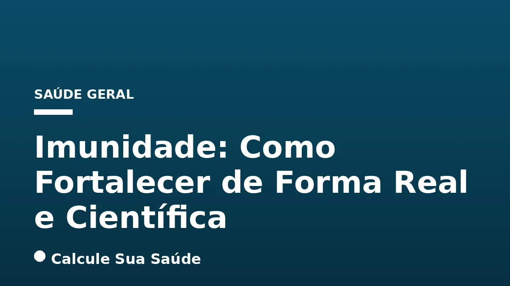

Aviso médico importante
Este conteúdo é educativo e informativo e não substitui a consulta, o diagnóstico ou o tratamento de um profissional de saúde. Em caso de sintomas, procure orientação médica.
Índice do Artigo
- 1. O Que É o Sistema Imunológico: Uma Rede de Defesa Intrincada
- 2. Os Dois Pilares da Imunidade: Inata e Adaptativa
- 3. Resiliência Imunológica: A Capacidade de Recuperação
- 4. Imunodeficiência: Quando o Sistema Falha em Proteger
- 5. Fatores Que Comprometem a Imunidade: Além da Genética
- 6. Sinais de Alerta de Imunodeficiência: Quando Procurar Ajuda
- 7. Diagnóstico da Imunodeficiência: Avaliação e Testes
- 8. Prevenção e Tratamentos com Respaldo de Evidência: O Caminho Real para a Imunidade
- 9. Alimentação Saudável e Equilibrada: O Combustível Essencial
- 10. Atividade Física Regular: Movimento para a Imunidade
- 11. Sono Adequado: O Repouso que Fortalece
- 12. Gerenciamento do Estresse e Hidratação: Equilíbrio Interno
- 13. Vacinação: Proteção Ativa e Coletiva
- 14. Mitos Comuns vs. O Que a Ciência Diz sobre Imunidade
- 15. Conclusão: Um Compromisso Contínuo com a Saúde Imunológica
- 16. Perguntas frequentes
O sistema imunológico, uma complexa e fascinante rede de células, tecidos e órgãos, é o guardião incansável da nossa saúde. Sua missão primordial é proteger o organismo contra uma vasta gama de ameaças, desde vírus e bactérias até células cancerígenas, garantindo a homeostase e a integridade corporal. Compreender seu funcionamento é o primeiro passo para adotar estratégias eficazes de fortalecimento.
Em um mundo repleto de informações e, por vezes, desinformação, é crucial discernir entre o que realmente funciona e as promessas milagrosas que carecem de respaldo científico. Este artigo aprofundado, baseado em evidências, visa desmistificar o fortalecimento da imunidade, oferecendo um guia prático e fundamentado para construir um sistema imune robusto e resiliente.
Abordaremos os conceitos-chave da imunologia, os fatores que podem comprometer suas defesas, os sinais de alerta de imunodeficiência e, o mais importante, as estratégias comprovadas que realmente fazem a diferença. Prepare-se para uma jornada de conhecimento que o capacitará a tomar decisões informadas sobre sua saúde imunológica.
Em resumo
- O sistema imunológico é uma rede complexa de defesa, dividida em imunidade inata (resposta rápida e não específica) e adaptativa (específica e com memória).
- Estilo de vida inadequado, tabagismo, álcool, obesidade e alta ingestão de açúcar são fatores que podem comprometer a imunidade.
- Não existem 'pílulas mágicas' ou suplementos que 'turbinam' a imunidade da noite para o dia; o fortalecimento é um processo contínuo.
- Uma alimentação saudável e equilibrada, atividade física regular, sono adequado, gerenciamento do estresse e vacinação são os pilares para uma imunidade forte.
- A suplementação de nutrientes como Vitamina C e D deve ser feita com cautela e, idealmente, sob orientação profissional, não substituindo uma dieta balanceada.
- A resiliência imunológica é a capacidade do sistema de responder eficazmente a estressores e se recuperar rapidamente, mantendo a inflamação sob controle.
1. O Que É o Sistema Imunológico: Uma Rede de Defesa Intrincada
O sistema imunológico, também conhecido como sistema imune ou imunitário, representa uma das mais sofisticadas e vitais estruturas do corpo humano. Ele não é um órgão isolado, mas sim uma complexa rede interconectada de células, tecidos e órgãos que trabalham em sinergia para proteger o organismo contra uma vasta gama de ameaças. Essas ameaças incluem agentes infecciosos como vírus, bactérias, fungos e parasitas, bem como células cancerígenas e toxinas. Sua função primordial é discernir o que é parte do corpo ('próprio') do que é estranho ('não-próprio'), mantendo a homeostase e a integridade da saúde.
A eficácia do sistema imunológico reside em sua capacidade de identificar, neutralizar e eliminar invasores, ao mesmo tempo em que minimiza os danos aos tecidos saudáveis do próprio corpo. Essa distinção é fundamental para prevenir doenças autoimunes, onde o sistema ataca erroneamente as células do próprio organismo. A compreensão de como essa rede funciona é essencial para valorizar e adotar práticas que a fortaleçam de maneira real e duradoura.
2. Os Dois Pilares da Imunidade: Inata e Adaptativa
Para cumprir sua missão protetora, o sistema imunológico opera através de dois tipos principais de imunidade que se complementam e interagem constantemente:
Imunidade Inata: A Primeira Linha de Defesa
A imunidade inata é a defesa mais antiga e fundamental do nosso corpo, presente desde o nascimento. Ela atua como a primeira linha de frente, oferecendo uma resposta rápida e não específica a qualquer invasor. Isso significa que ela não 'aprende' a reconhecer patógenos específicos, mas sim reage a padrões moleculares comuns a muitos microrganismos. As barreiras físicas, como a pele e as membranas mucosas, e químicas, como o pH ácido do estômago, são componentes cruciais dessa imunidade. No nível celular, a imunidade inata envolve células como monócitos, macrófagos, neutrófilos, células NK (natural killers) e células dendríticas, que englobam e destroem patógenos ou sinalizam a presença de infecção a outras células imunológicas.
Imunidade Adaptativa (ou Adquirida): Memória e Especificidade
Em contraste, a imunidade adaptativa desenvolve-se ao longo da vida, à medida que o corpo é exposto a diferentes patógenos. Ela é altamente específica, o que significa que cada resposta é direcionada a um agente infeccioso particular. A característica mais notável da imunidade adaptativa é a criação de uma 'memória imunológica'. Após a primeira exposição a um patógeno, o sistema adaptativo 'lembra-se' dele, permitindo uma resposta muito mais rápida e eficaz em futuras exposições ao mesmo agente. As células-chave dessa imunidade são os linfócitos T e B, que produzem anticorpos e coordenam ataques específicos. A vacinação é um exemplo clássico de como a imunidade adaptativa é estimulada, 'ensinando' o sistema imune a combater patógenos específicos sem que a pessoa precise adoecer.
3. Resiliência Imunológica: A Capacidade de Recuperação
Além de simplesmente combater invasores, um sistema imunológico saudável demonstra o que chamamos de resiliência imunológica. Esta é a capacidade do sistema de lançar ataques rapidamente para defender-se eficazmente contra invasores infecciosos e responder apropriadamente a outros estressores inflamatórios, como o envelhecimento ou outras condições de saúde. Mais do que isso, a resiliência implica a capacidade de se recuperar rapidamente após a ameaça, mantendo a inflamação potencialmente prejudicial sob controle. Um sistema resiliente evita tanto a sub-resposta (que leva a infecções prolongadas) quanto a super-resposta (que pode causar danos aos próprios tecidos).
A resiliência é um indicador de um sistema imunológico bem regulado, capaz de modular suas respostas de acordo com a necessidade. Ela é influenciada por uma série de fatores de estilo de vida, que serão explorados em detalhes. Construir essa resiliência é o objetivo final de qualquer estratégia de fortalecimento da imunidade, garantindo que o corpo esteja sempre pronto para se defender e se recuperar eficientemente.
4. Imunodeficiência: Quando o Sistema Falha em Proteger
A imunodeficiência ocorre quando a atividade do sistema imunológico é inferior ao normal, tornando o corpo mais vulnerável a germes que podem causar infecções. Existem dois tipos principais de imunodeficiências: as primárias e as secundárias.
Imunodeficiências Primárias: Condições Congênitas
As imunodeficiências primárias são um grupo de condições, muitas vezes congênitas ou hereditárias, nas quais o sistema imunológico não funciona corretamente desde o nascimento ou devido a um defeito genético. Já foram identificadas mais de 300 formas de imunodeficiências primárias, que variam de leves a graves. Essas condições dificultam a luta do corpo contra infecções e podem levar a uma série de problemas de saúde ao longo da vida.
Imunodeficiências Secundárias: Fatores Adquiridos
As imunodeficiências secundárias, por outro lado, são adquiridas ao longo da vida devido a fatores externos ou outras condições de saúde. Estas são as que mais frequentemente associamos a um 'sistema imunológico enfraquecido' e são, em grande parte, influenciadas por escolhas de estilo de vida e condições médicas. Compreender esses fatores é crucial para a prevenção e o manejo.
5. Fatores Que Comprometem a Imunidade: Além da Genética
Mesmo na ausência de imunodeficiências primárias, diversos fatores podem comprometer a eficácia do sistema imunológico, tornando-o menos apto a combater infecções e inflamações. Muitos desses fatores estão intrinsecamente ligados ao estilo de vida moderno e podem ser modificados.
Estilo de Vida Inadequado
Hábitos alimentares ruins, falta de atividade física regular, sono insuficiente e estresse crônico são um quarteto que pode afetar significativamente o sistema imunológico. A privação de sono, por exemplo, eleva os níveis de cortisol, um hormônio que, em excesso, suprime a capacidade defensiva do corpo. O estresse crônico, por sua vez, também tem um impacto negativo profundo, como explorado em nosso artigo sobre Cortisol e Estresse Crônico: Neurobiologia.
Tabagismo
O tabagismo é um inimigo conhecido da saúde, e o sistema imunológico não é exceção. Fumar prejudica o equilíbrio imunológico, aumentando o risco de infecções e contribuindo para o desenvolvimento de doenças autoimunes, como a artrite reumatoide. As substâncias tóxicas presentes no cigarro afetam diretamente a função de diversas células imunológicas.
Consumo Excessivo de Álcool
O consumo excessivo e crônico de álcool pode enfraquecer o sistema imunológico ao longo do tempo, impactando tanto a imunidade adaptativa quanto a inata. Ele pode prejudicar a função de barreiras mucosas, como as do trato respiratório e gastrointestinal, e afetar a produção e a atividade de células imunológicas. Para mais informações sobre os danos do álcool, veja nosso artigo Álcool e Fígado: Da Esteatose à Cirrose.
Obesidade
A obesidade não é apenas um excesso de peso; é um estado de inflamação crônica de baixo grau. O tecido adiposo, especialmente a gordura visceral, pode produzir citocinas inflamatórias que contribuem para esse estado. Essa inflamação constante pode levar a uma resposta inflamatória excessiva do sistema imunológico quando exposto a patógenos, dificultando uma resposta eficaz e equilibrada. A redução da Gordura Visceral: Perigos e Estratégias de Redução é crucial para a saúde imunológica.
Alta Ingestão de Açúcar
Estudos, principalmente em modelos animais, sugerem que uma alta ingestão de açúcar pode ter efeitos negativos na imunidade, potencialmente piorando doenças autoimunes e contribuindo para a inflamação. O consumo excessivo de Alimentos Ultraprocessados: Riscos e Identificação, que são frequentemente ricos em açúcares adicionados, também é um fator de risco.
6. Sinais de Alerta de Imunodeficiência: Quando Procurar Ajuda
Identificar os sinais de um sistema imunológico comprometido é fundamental para buscar diagnóstico e tratamento precoces. Embora infecções ocasionais sejam normais, a frequência, duração ou gravidade incomuns podem indicar um problema subjacente. Um dos sinais mais comuns de imunodeficiência é ter infecções mais frequentes, duradouras ou difíceis de tratar do que o normal.
Outros sintomas que podem indicar uma imunodeficiência primária ou secundária incluem:
- Infecções recorrentes, como pneumonia, bronquite, sinusite, infecções de ouvido, meningite ou infecções de pele.
- Inflamação e infecção de órgãos internos sem causa aparente.
- Distúrbios sanguíneos, como baixa contagem de plaquetas (trombocitopenia) ou anemia, que podem ser um sinal de Anemia Ferropriva: Sinais e Diagnóstico.
- Problemas digestivos persistentes, como cólicas, perda de apetite, náuseas e diarreia crônica.
- Atraso no crescimento e desenvolvimento em crianças.
- Desenvolvimento de doenças autoimunes, como lúpus, artrite reumatoide ou diabetes tipo 1, onde o sistema imunológico ataca os próprios tecidos do corpo.
Se você ou alguém próximo apresentar vários desses sintomas de forma persistente, é crucial procurar avaliação médica para um diagnóstico preciso.
7. Diagnóstico da Imunodeficiência: Avaliação e Testes
O diagnóstico de uma imunodeficiência, especialmente as primárias, envolve uma abordagem cuidadosa e multifacetada. O processo geralmente começa com uma avaliação detalhada do histórico de doenças do paciente e da presença de distúrbios imunológicos hereditários em parentes próximos. Um exame físico completo também é parte essencial da investigação.
Para confirmar a suspeita e identificar o tipo específico de imunodeficiência, diversos testes podem ser realizados:
- Exames de Sangue: São cruciais para determinar os níveis de imunoglobulinas (proteínas de combate a infecções, como IgA, IgG, IgM), que são essenciais para a imunidade adaptativa. Também verificam os níveis de células sanguíneas e células específicas do sistema imunológico, como linfócitos T e B, e neutrófilos. Níveis fora da faixa padrão podem indicar um defeito no sistema imunológico ou uma deficiência na produção de anticorpos.
- Testes de Função Imunológica: Além de contar as células, esses testes avaliam a capacidade funcional das células imunológicas, como a habilidade dos linfócitos de responder a estímulos.
- Testes Pré-natais: Em casos de histórico familiar de imunodeficiência primária, testes podem ser realizados em amostras de líquido amniótico, sangue fetal ou células da placenta. Isso permite verificar problemas genéticos antes do nascimento e preparar o tratamento necessário logo após o parto, se for o caso.
O diagnóstico precoce é vital para iniciar o tratamento adequado e melhorar a qualidade de vida dos indivíduos afetados por imunodeficiências.
8. Prevenção e Tratamentos com Respaldo de Evidência: O Caminho Real para a Imunidade
É fundamental desmistificar a ideia de que existe uma 'pílula mágica' ou um atalho para fortalecer o sistema imunológico rapidamente. A construção de um sistema imunológico saudável e resiliente é um projeto de médio a longo prazo, que se baseia em hábitos diários e um estilo de vida consciente. As estratégias mais eficazes são aquelas com respaldo científico, que promovem a saúde geral do organismo e, consequentemente, otimizam a função imunológica.
A seguir, detalhamos as abordagens baseadas em evidências para fortalecer sua imunidade, focando em pilares que você pode integrar em sua rotina.
9. Alimentação Saudável e Equilibrada: O Combustível Essencial
A nutrição adequada é um dos pilares mais importantes para o funcionamento ideal do sistema imunológico. Uma dieta rica e variada fornece os múltiplos nutrientes necessários para a produção e atividade das células imunológicas. Priorize uma alimentação baseada em alimentos integrais e naturais.
Priorize Alimentos Naturais e Evite Ultraprocessados
Uma dieta rica em vegetais, frutas, proteínas magras, laticínios (se tolerados), gorduras saudáveis e grãos integrais é fundamental. Esses alimentos fornecem vitaminas, minerais, antioxidantes e fibras que apoiam a saúde geral e a imunidade. Por outro lado, limite o consumo de alimentos ultraprocessados, gorduras saturadas, sal e açúcares adicionados. Esses itens têm composição nutricional desbalanceada e podem favorecer doenças crônicas e inflamação, prejudicando a resposta imunológica. Para entender mais sobre os riscos, consulte nosso artigo sobre Alimentos Ultraprocessados: Riscos e Identificação.
Nutrientes Específicos e a Cautela na Suplementação
Alguns nutrientes são particularmente importantes para a função imunológica, mas a melhor forma de obtê-los é através da dieta. A suplementação deve ser considerada com cautela e, idealmente, sob orientação profissional, especialmente em casos de deficiência comprovada.
- Vitamina C: Presente em abundância em frutas cítricas (laranja, acerola, limão, kiwi, morango, abacaxi, maracujá) e vegetais crus como pimentão e brócolis. Ajuda a estimular a resistência a infecções e possui propriedades anti-inflamatórias. A suplementação em doses de 500mg a 2g ao dia em cápsulas pode ser considerada em alguns contextos, mas o uso crônico de formas efervescentes deve ser evitado devido ao risco de cálculos renais. O Ministério da Saúde indica que, em casos de infecção e baixa imunidade, médicos podem prescrever complementos nutricionais como a vitamina C, mas isso não substitui uma alimentação adequada.
- Vitamina D: Essencial para a regulação imunológica. A melhor forma de aumentar seus níveis é a exposição solar diária por 15-20 minutos, expondo grandes áreas do corpo. Em regiões com pouca exposição solar ou para indivíduos com deficiência, a suplementação pode ser necessária, sempre com acompanhamento médico.
- Zinco: Encontrado em carnes vermelhas, frutos do mar (especialmente ostras), fígado, vísceras, peixes, ovos e cereais integrais. É vital para o desenvolvimento e função das células imunológicas.
- Outros: Alimentos como açafrão, cebola, alho e própolis são mencionados por suas propriedades anti-inflamatórias e antioxidantes, mas não há evidências robustas de que possam 'aumentar' a imunidade de forma isolada ou milagrosa. Eles contribuem para uma dieta saudável geral.
Uma Dieta Mediterrânea: A Mais Recomendada para a Saúde, por exemplo, é um excelente modelo de alimentação que supre as necessidades nutricionais para um sistema imunológico robusto.
10. Atividade Física Regular: Movimento para a Imunidade
A prática regular de atividade física é um poderoso aliado da saúde imunológica. Ela não apenas melhora o bem-estar geral, o sono e ajuda a reduzir a ansiedade, mas também tem efeitos diretos e positivos sobre o sistema imune. Combinada com uma boa alimentação, a atividade física é fundamental para manter um peso saudável, evitando a obesidade e o excesso de tecido adiposo, que podem levar a respostas inflamatórias excessivas e prejudicar a imunidade.
A Organização Mundial da Saúde (OMS) recomenda pelo menos 150 minutos semanais de atividade física moderada ou 75 minutos de atividade intensa para adultos. Isso pode incluir caminhadas rápidas, natação, ciclismo, dança ou exercícios de força. A regularidade é mais importante do que a intensidade extrema, pois o exercício excessivo e sem recuperação adequada pode, paradoxalmente, suprimir temporariamente a imunidade. Encontre uma atividade que você goste e que possa manter consistentemente.
11. Sono Adequado: O Repouso que Fortalece
A importância do sono para a saúde é frequentemente subestimada, mas para o sistema imunológico, ele é absolutamente essencial. Dormir o suficiente (geralmente 7 a 9 horas por noite para adultos) permite que o corpo descanse, se recupere e regule suas funções, incluindo a produção de citocinas e outras moléculas importantes para a resposta imune. A privação crônica de sono pode aumentar os níveis de cortisol, um hormônio do estresse que, como mencionado, reduz a capacidade defensiva do corpo.
Durante o sono, o corpo produz proteínas protetoras chamadas citocinas, que são cruciais para combater infecções e inflamações. A falta de sono pode diminuir a produção dessas citocinas e a eficácia das células T, que são fundamentais na imunidade adaptativa. Priorizar uma boa higiene do sono é uma das estratégias mais simples e eficazes para fortalecer sua imunidade. Para mais informações sobre a qualidade do sono, consulte nosso artigo sobre Apneia do Sono: Sintomas, Diagnóstico e CPAP, que pode afetar significativamente o descanso.
12. Gerenciamento do Estresse e Hidratação: Equilíbrio Interno
O estresse crônico é um dos maiores inimigos da imunidade. Ele pode prejudicar o sistema imunológico de várias maneiras, aumentando o estado de inflamação e suprimindo a função de células imunológicas. Em situações de estresse prolongado, o corpo libera hormônios como o cortisol, que podem ter um efeito imunossupressor. Portanto, aprender a gerenciar o estresse é uma estratégia vital para manter a imunidade robusta.
Estratégias para Gerenciar o Estresse
Práticas como massagem, meditação, yoga, biofeedback, hobbies relaxantes, contato com a natureza e um 'detox digital' podem ajudar a controlar os níveis de estresse. A busca por equilíbrio emocional e mental é tão importante quanto a saúde física para a imunidade. Para aprofundar-se em técnicas eficazes, leia nosso artigo sobre Estresse: Técnicas Baseadas em Evidências para Lidar.
Hidratação Adequada
A hidratação é fundamental para todas as funções corporais, incluindo a imunidade. Beber aproximadamente 2 litros de água por dia (ou mais, dependendo das necessidades individuais e do clima) ajuda a eliminar toxinas do corpo e melhora a resistência física. A água transporta nutrientes para as células, incluindo as células imunológicas, e ajuda a manter as mucosas úmidas, que são uma barreira física importante contra patógenos.
13. Vacinação: Proteção Ativa e Coletiva
As vacinas são uma das maiores conquistas da medicina moderna e uma forma segura, eficaz e custo-efetiva de prevenir doenças, deficiências e mortes por doenças infecciosas. Elas atuam estimulando o sistema imunológico a produzir respostas protetoras similares às geradas por infecções naturais, mas sem os riscos de adoecimento e complicações associados à doença real.
Ao introduzir uma versão enfraquecida ou inativada de um patógeno, ou apenas partes dele, as vacinas 'ensinam' o sistema imunológico a reconhecer e combater o invasor. Dessa forma, se o corpo for exposto ao patógeno real no futuro, ele já terá uma memória imunológica e será capaz de montar uma resposta rápida e eficaz. A imunização ao longo da vida, seguindo os calendários de vacinação recomendados, é crucial para minimizar o impacto das doenças e aumentar a resiliência individual e coletiva do organismo. A vacinação não apenas protege o indivíduo, mas também contribui para a imunidade de rebanho, protegendo aqueles que não podem ser vacinados.
14. Mitos Comuns vs. O Que a Ciência Diz sobre Imunidade
No campo da saúde, especialmente quando se trata de imunidade, muitos mitos e promessas infundadas circulam. É vital basear nossas escolhas em evidências científicas sólidas para evitar gastos desnecessários e riscos à saúde.
Mito: Existem 'pílulas mágicas' ou suplementos que 'turbinam' a imunidade da noite para o dia.
Ciência: Não há evidências robustas de que suplementos ou produtos possam 'impulsionar' o sistema imunológico de forma rápida e duradoura. O fortalecimento da imunidade é um processo complexo e multifatorial, dependente de um estilo de vida saudável contínuo. Suplementos podem ser úteis em casos de deficiência nutricional comprovada, mas não são uma solução milagrosa para um sistema imunológico saudável.
Mito: Certos alimentos são 'milagrosos' e podem combater infecções ou garantir imunidade.
Ciência: Não existe nenhum alimento 'milagroso' que, isoladamente, combata infecções ou garanta imunidade. No entanto, uma alimentação variada e rica em nutrientes, como a que enfatizamos neste artigo, é fundamental para o bom funcionamento do sistema imunológico como um todo. A sinergia de diferentes nutrientes é o que realmente importa.
Mito: Chás específicos, como o de gengibre, podem prevenir a proliferação de vírus.
Ciência: Embora alguns chás e ingredientes naturais possuam propriedades benéficas, como anti-inflamatórias ou antioxidantes, não há comprovação científica de que um chá de gengibre, por exemplo, possa prevenir a proliferação de vírus específicos, como o coronavírus. Eles podem oferecer alívio sintomático em resfriados comuns, mas não substituem as defesas imunológicas ou a vacinação.
É crucial manter uma postura crítica e buscar informações em fontes confiáveis e baseadas em evidências, como o Calcule Sua Saúde, para tomar decisões informadas sobre sua saúde.
15. Conclusão: Um Compromisso Contínuo com a Saúde Imunológica
Fortalecer a imunidade não é um evento pontual, mas sim um compromisso contínuo com um estilo de vida saudável e consciente. Como vimos, não há atalhos ou soluções milagrosas. A ciência nos mostra que a base para um sistema imunológico robusto reside em pilares fundamentais: uma alimentação equilibrada e rica em nutrientes, a prática regular de atividade física, um sono reparador, o gerenciamento eficaz do estresse e a adesão ao calendário vacinal.
Cada uma dessas estratégias contribui de forma sinérgica para a resiliência imunológica, capacitando seu corpo a defender-se de forma eficaz contra patógenos e a se recuperar rapidamente de estressores. Ao investir nesses hábitos, você não apenas fortalece sua imunidade, mas também promove sua saúde e bem-estar geral a longo prazo.
Lembre-se sempre que este conteúdo é educativo e não substitui a avaliação e o acompanhamento de um profissional de saúde. Em caso de dúvidas ou sintomas persistentes de imunodeficiência, procure um médico para um diagnóstico e plano de tratamento individualizado.
16. Perguntas frequentes
O que é o sistema imunológico e quais são seus tipos principais?
O sistema imunológico é uma rede de células, tecidos e órgãos que protege o corpo contra doenças. Ele possui dois tipos principais: a imunidade inata, que é a primeira linha de defesa e não específica, e a imunidade adaptativa, que se desenvolve ao longo da vida, é específica e cria memória imunológica.
Quais fatores do estilo de vida podem enfraquecer a imunidade?
Um estilo de vida inadequado, incluindo má alimentação, falta de atividade física, sono insuficiente e estresse crônico, pode comprometer a imunidade. Tabagismo, consumo excessivo de álcool, obesidade e alta ingestão de açúcar também são fatores de risco significativos.
Existe alguma 'pílula mágica' para fortalecer a imunidade rapidamente?
Não, a ciência não apoia a existência de 'pílulas mágicas' ou suplementos que possam fortalecer a imunidade da noite para o dia. O fortalecimento real e duradouro é um processo complexo que depende de hábitos de vida saudáveis contínuos e consistentes.
Como a alimentação influencia o sistema imunológico?
Uma alimentação saudável e equilibrada, rica em vegetais, frutas, proteínas magras e grãos integrais, fornece os nutrientes essenciais (como Vitaminas C e D, Zinco) para o funcionamento ideal das células imunológicas. Limitar ultraprocessados e açúcares também é crucial.
Qual o papel da vacinação no fortalecimento da imunidade?
As vacinas estimulam a imunidade adaptativa, 'ensinando' o sistema imunológico a reconhecer e combater patógenos específicos sem causar a doença. Elas são uma forma segura e eficaz de prevenir infecções e construir memória imunológica, protegendo o indivíduo e a comunidade.
Quantas horas de sono são recomendadas para uma boa imunidade?
Para adultos, geralmente são recomendadas de 7 a 9 horas de sono por noite. O sono adequado é vital para o corpo descansar, se recuperar e regular funções imunológicas, como a produção de citocinas, que são importantes para combater infecções.
O estresse pode realmente afetar a imunidade?
Sim, o estresse crônico pode prejudicar significativamente o sistema imunológico. Ele aumenta os níveis de hormônios como o cortisol, que podem suprimir a função das células imunológicas e aumentar o estado de inflamação no corpo, tornando-o mais vulnerável a doenças.
Quando devo procurar um médico por preocupações com a imunidade?
Você deve procurar um médico se tiver infecções mais frequentes, duradouras ou difíceis de tratar do que o normal, ou se apresentar sintomas como inflamação de órgãos internos, distúrbios sanguíneos, problemas digestivos persistentes ou atraso no crescimento (em crianças). Esses podem ser sinais de imunodeficiência.
Leia também
Referências e Fontes
1. Wikipédia. Sistema imunitário. Disponível em: pt.wikipedia.org
2. St. Jude Children's Research Hospital. O sistema imunológico. Disponível em: together.stjude.org
3. Brasil Escola - UOL. Sistema imunológico: o que é e tipos de imunidade. Disponível em: brasilescola.uol.com.br
4. Khan Academy. Sistema imunológico (artigo). Disponível em: pt.khanacademy.org
5. National Institutes of Health (NIH). Immune System. Disponível em: nih.gov
6. Organização Mundial da Saúde (OMS). Vacinar para proteger todos. Disponível em: afro.who.int
7. Ministério da Saúde (Brasil). O que é imunidade. Disponível em: gov.br
8. Pan American Health Organization (PAHO). Imunização. Disponível em: paho.org